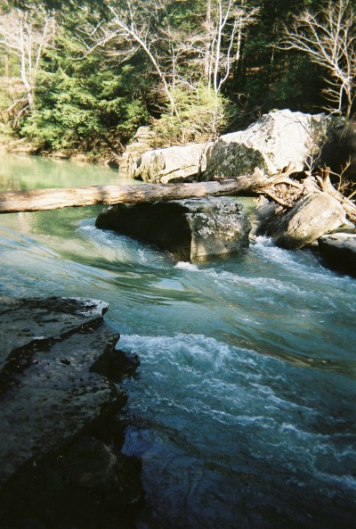
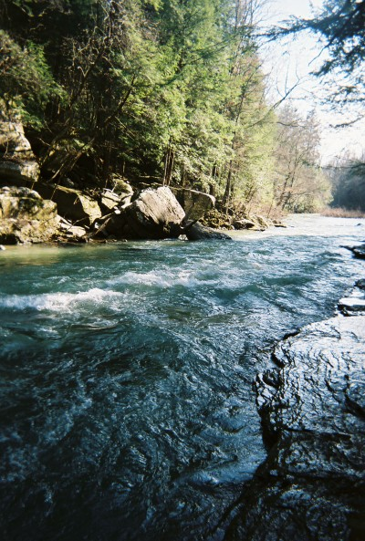
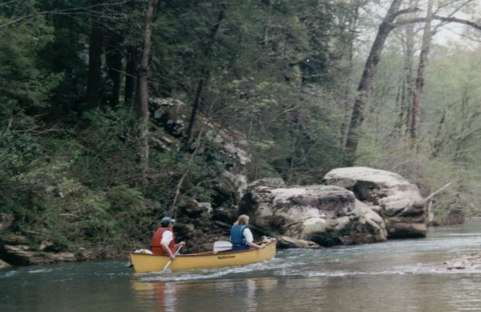

(photo courtesy Mark Cumnock)
(photo courtesy Mark Cumnock)
Sipsey River
|
Brenda Barnett and her Grandson. (Bob Barnett Photo) |
|  | Log at the top of 100 yard dash (January 2005) at 2'. (photo courtesy Mark Cumnock) |
|  | The lower part of 100 yard dash at 2'. (photo courtesy Mark Cumnock) |
|  | Murray and Kay Carroll |